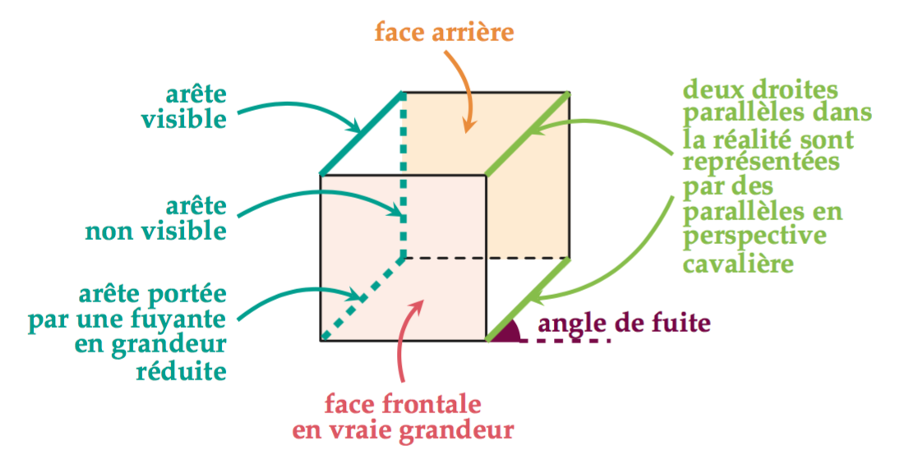

,, Un *{bold::solide} est un objet en relief.
On ne peut pas le tracer en vraie grandeur sur une feuille de papier plane.
,, Un *{bold::patron} permet de fabriquer le solide par pliage.
,, La *{bold::perspective cavalière} permet de représenter le solide sur une feuille papier en donnant l’impression de la 3D.
&

Convertir $\displaystyle \frac{\pi}{5}$, $\displaystyle \frac{5\pi}{2}$ et $\displaystyle \frac{-\pi}{4}$ en degré puis les placer sur le cercle trigonométrique.
Placer sur le cercle trigonométrique $\displaystyle -\frac{\pi}{3}$, $\displaystyle -\frac{\pi}{2}$, $\displaystyle \frac{11\pi}{8}$, $\displaystyle -\frac{5\pi}{8}$ et $\displaystyle \frac{17\pi}{6}$.
Soit un point $A$ tel que $\displaystyle (\vecteur{OI},\vecteur{OA}) = -\frac{\pi}{2}$. Donner $4$ mesures différentes de l'angle orienté $\displaystyle (\vecteur{OI},\vecteur{OA})$.